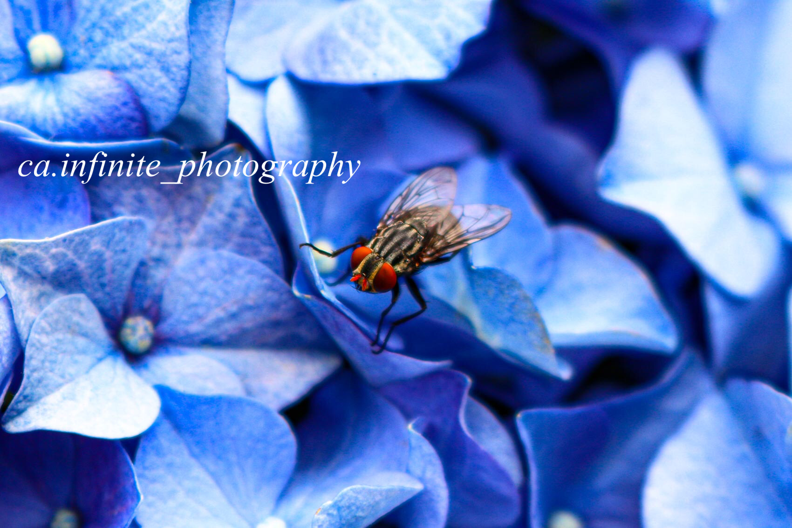
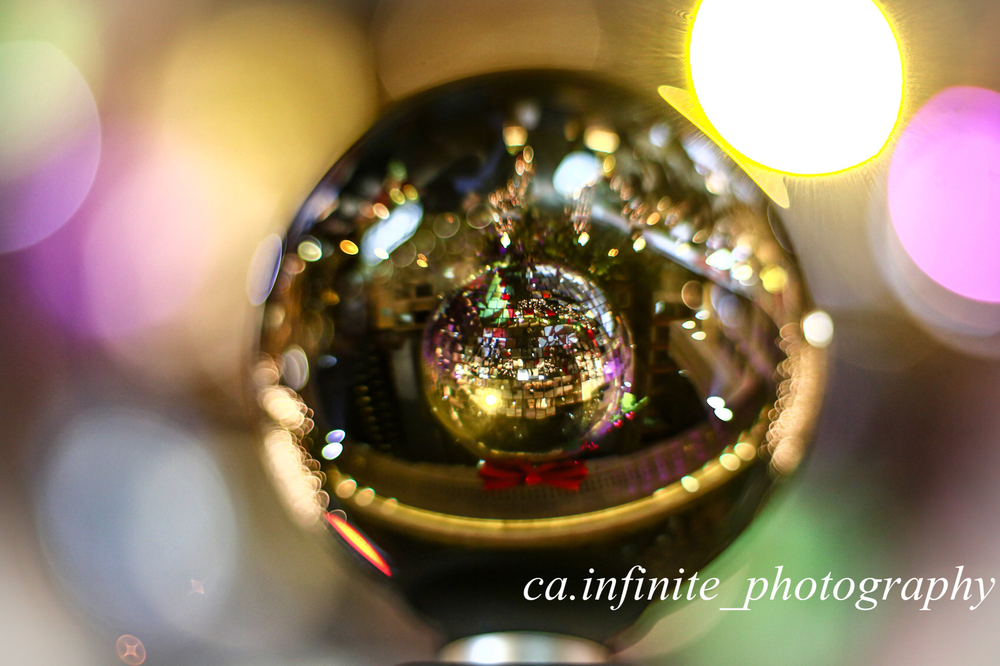
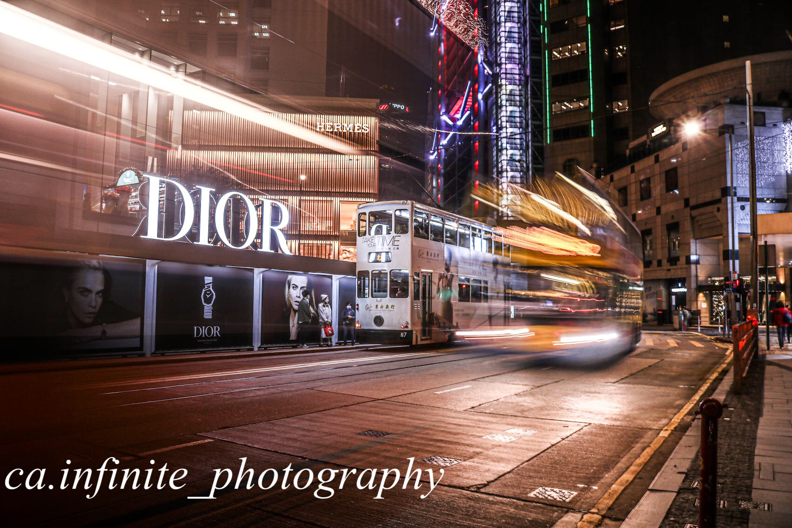
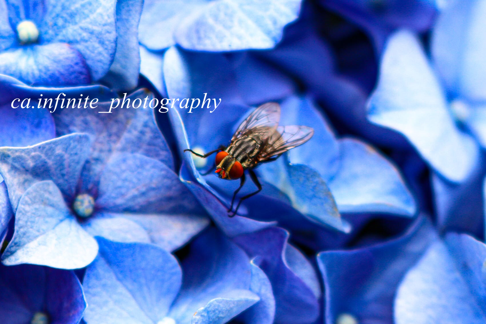
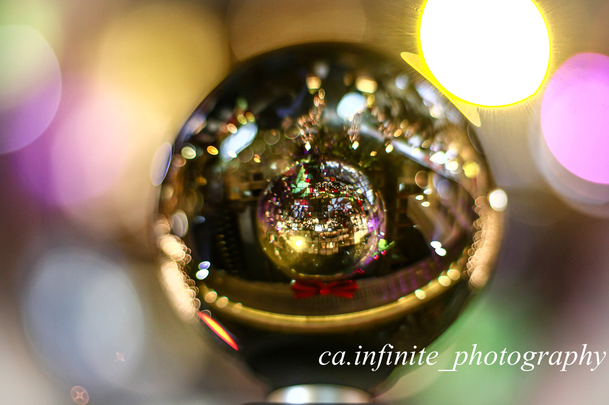
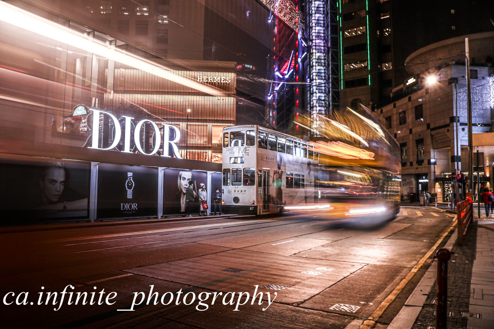

Discover the wonder of photography

Through the Lens: Unveiling Hidden Stories in Everyday Life
Viewing the world through a lens is like stepping into a vibrant new realm, revealing perspectives we have never considered. It allows us to capture moments and memories that are truly special, transforming the ordinary into the extraordinary. By experimenting with light and creativity, we can create stunning images that inspire. Even in familiar places—on the same street or among the same faces—imagination can turn a simple scene into something remarkable. Even a piece of discarded item can unfold a unique story waiting to be told.